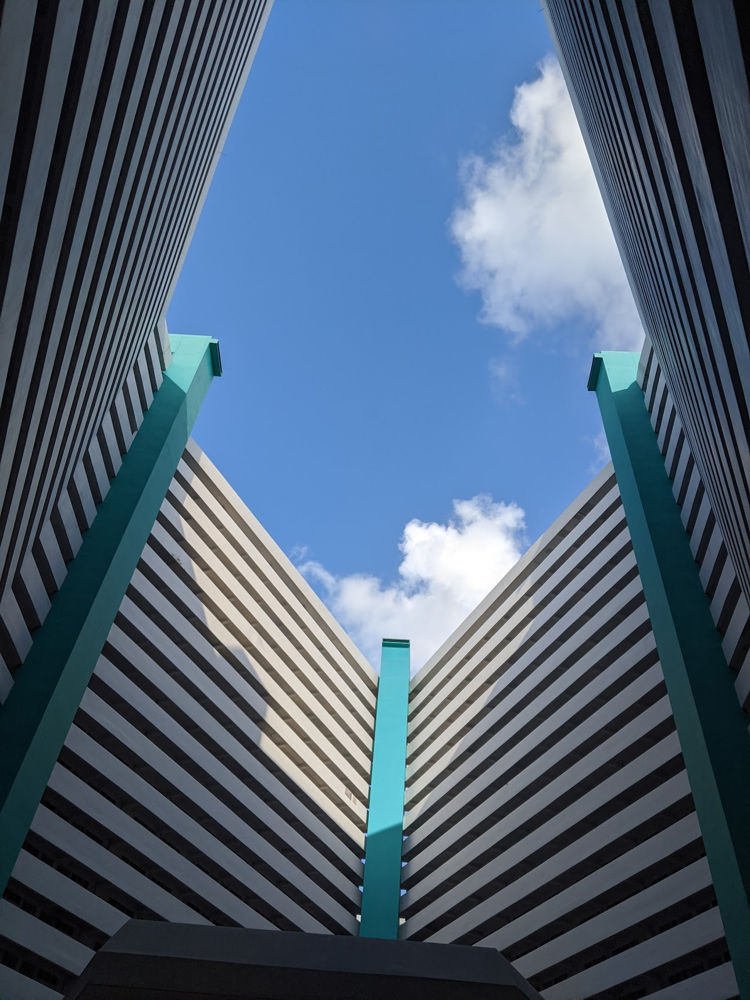
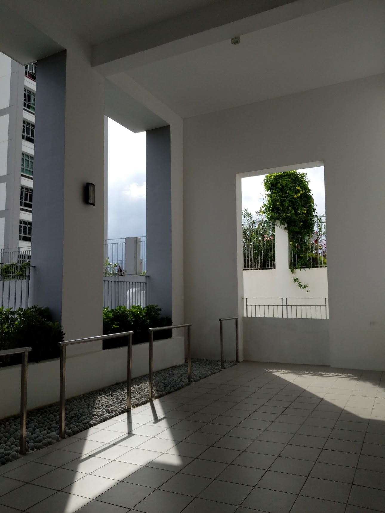
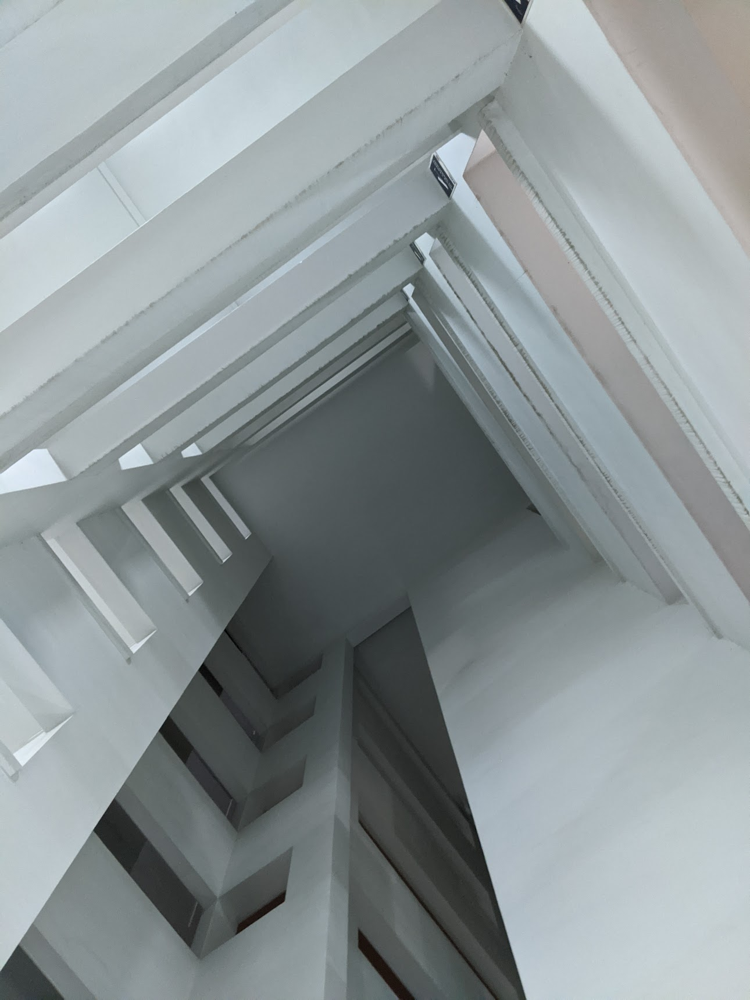
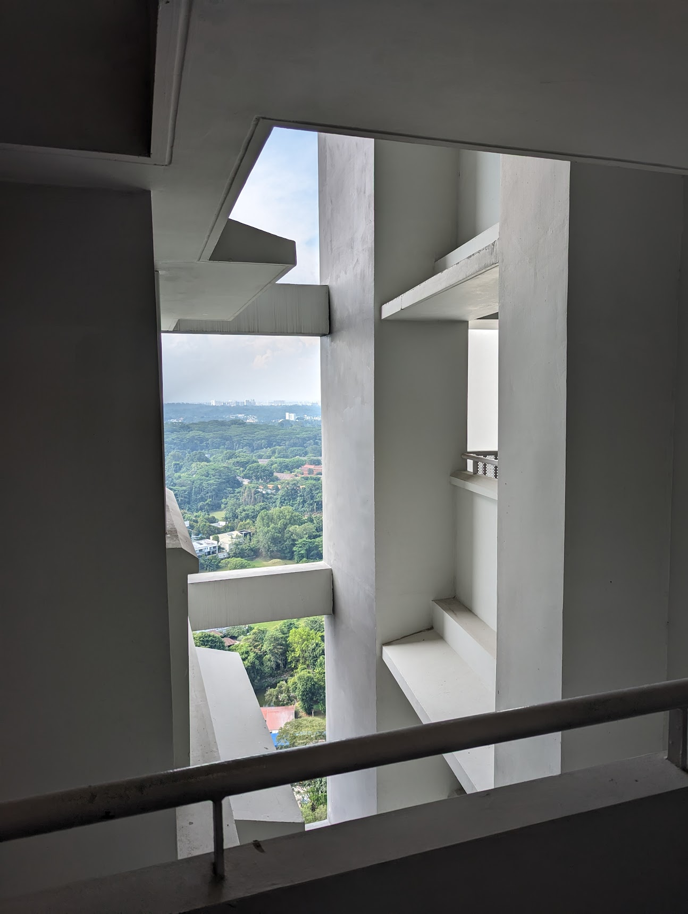
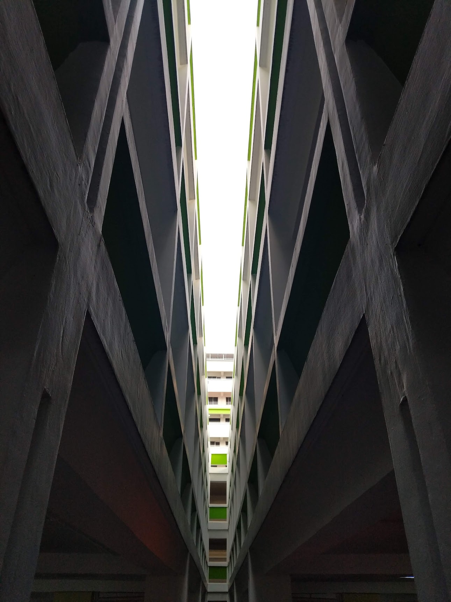
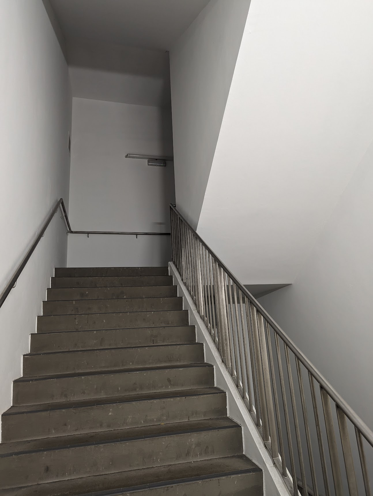
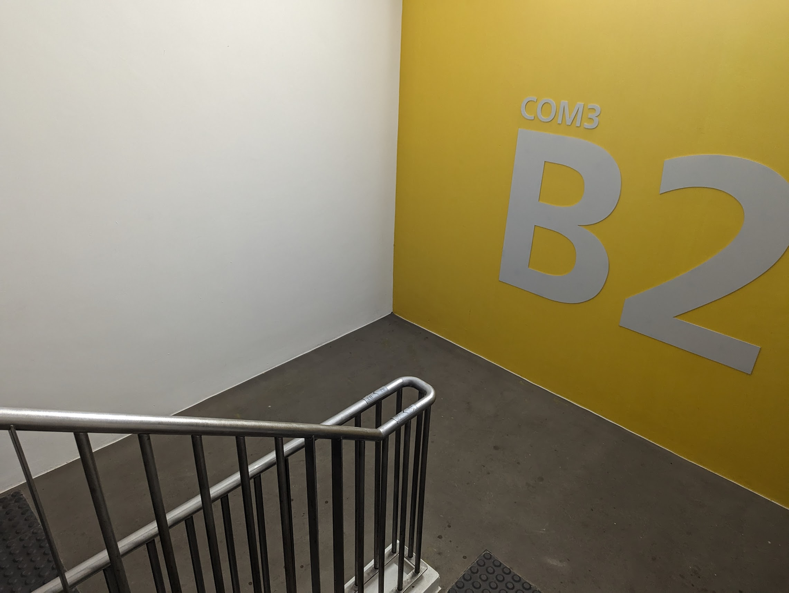
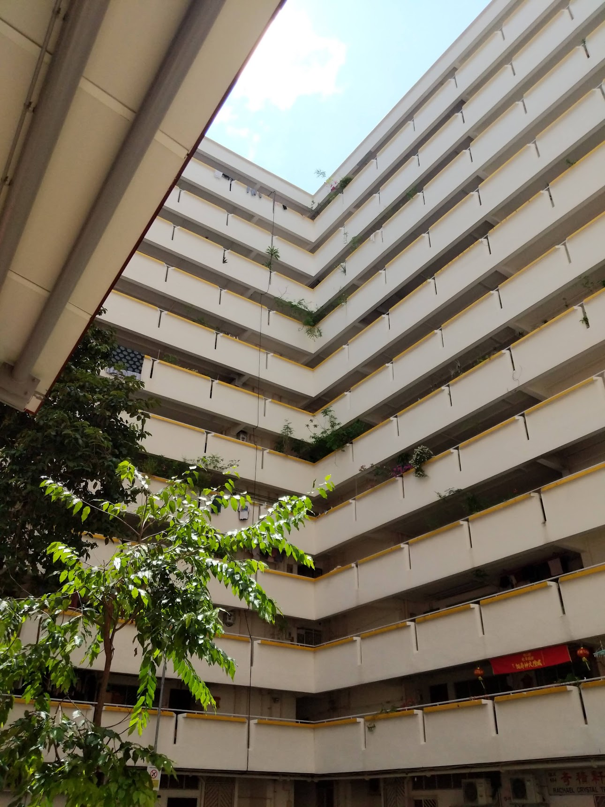

PC / SG / Photographs
Random walks of length n
buildings with geometry that make my brain go “ooo”. Singapore · sequence ongoing










PC / SG / Photographs
buildings with geometry that make my brain go “ooo”. Singapore · sequence ongoing







